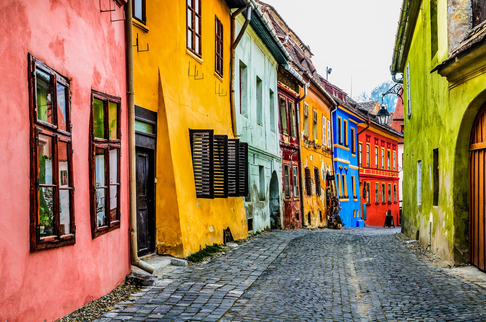
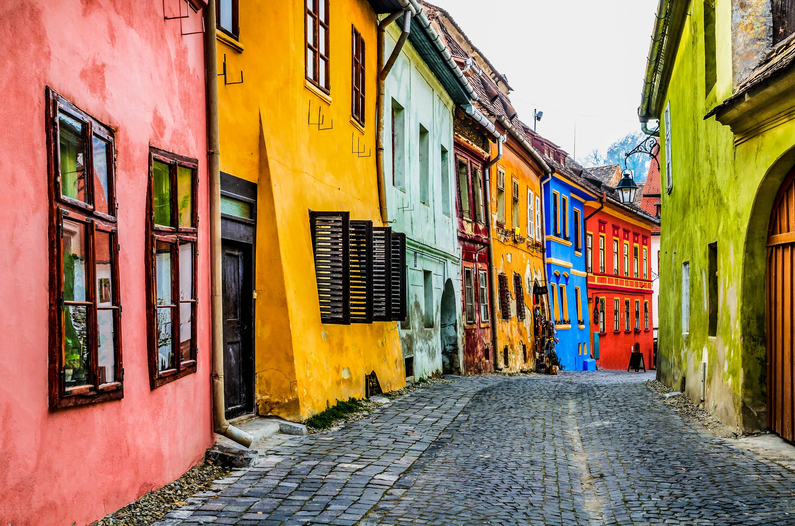
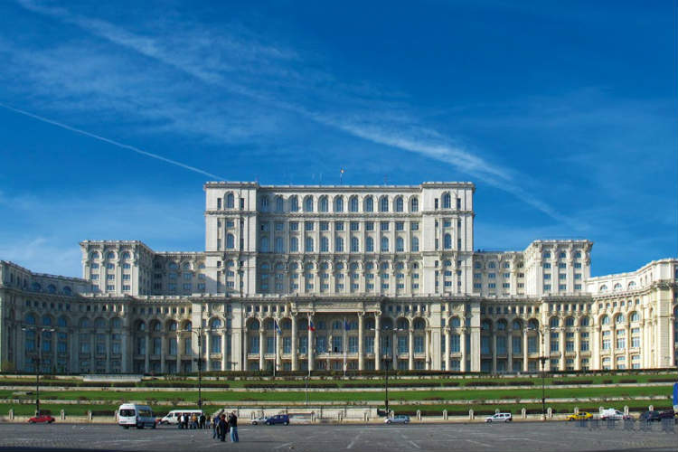
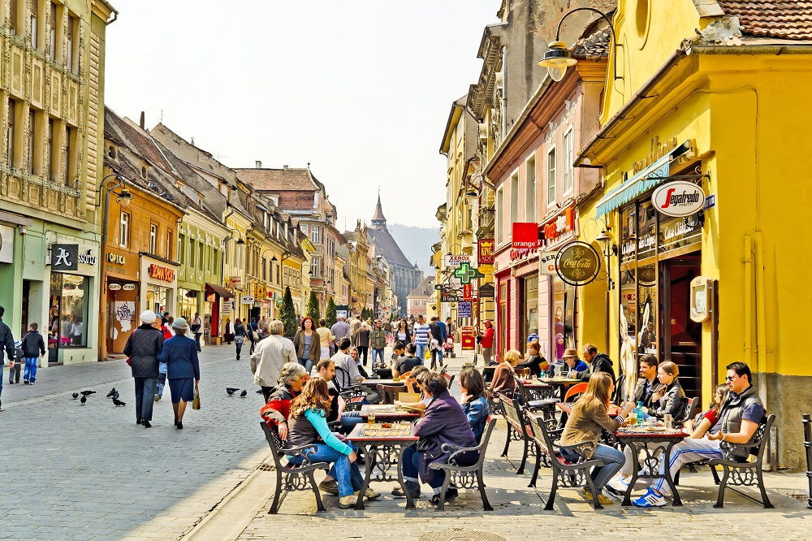
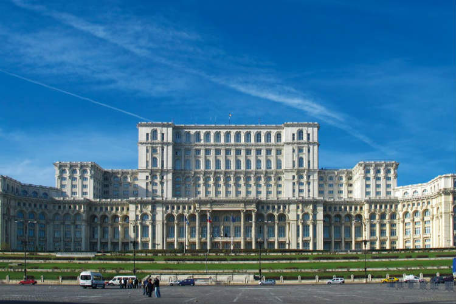
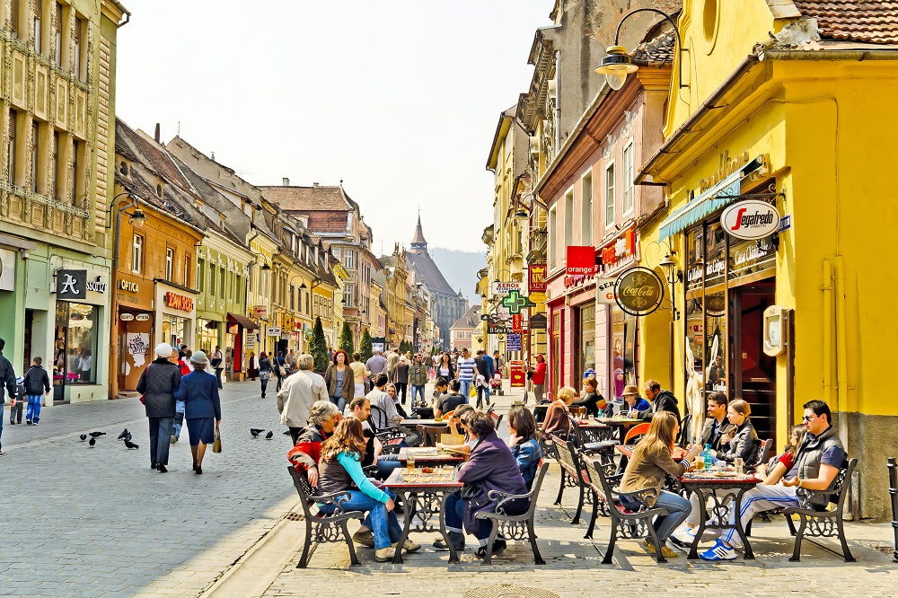

Contact us
Do you want to find out more about Romania?
Fill out the form and we will get in touch with you :)
 



 



are the words that best capture the essence of Romania,
a dynamic country rich in history, arts and scenic beauty.
The Carpathian Mountains draw a wide arc through the centre of the country, leaving a swath of exposed rocky peaks surrounded by groves of pine and deciduous trees, and stretches of bright green meadow below. The harsh geography has limited human habitation, and the woods are filled with deer, elk and bear. Europe's second-longest river, the Danube, marks Romania's southern border with Bulgaria before turning suddenly northward and emptying into the Black Sea. The delta provides sanctuary for 300 species of bird and 160 species of fish. The sprawling marshes account for the largest expanse of reed beds in the world.
Transylvania, the land that gave us Dracula, has no shortage of jaw-dropping castles pitched precariously on rocky hilltops. There's spooky Bran Castle, of course, with its spurious connection to Bram Stoker’s fictional count, but don’t overlook beauties such as Hunedoara’s 14th-century Corvin Castle or King Carol I’s sumptuous 19th-century pile, Peleş Castle. In medieval towns like Braşov, Sighişoara and Sibiu, cobbled walkways support chic streetside cafes, while a cacophony of sounds emanating from student bars and clubs echo off the Gothic and baroque facades in lively Cluj-Napoca. Transylvania’s Saxon villages boast fortified churches that date back half a millennium.
For centuries, a highly productive peasant culture thrived in much of Romania. The hilly geography and lack of passable roads necessitated the emergence of hundreds of self-sufficient villages, where old-school crafts such as bread-making, pottery, tanning and weaving were honed to an art. Folk museums, particularly the open-air skansens and village museums, are a must. Many isolated hamlets, where the old folkways are still practised, are museums in themselves. This is most evident in Maramureş, where oversized hay racks, horse carts and stately wooden churches dominate, and towns and villages have seemingly stepped out of the Middle Ages.
The rocky peaks of Transylvania and Moldavia, snow-capped from mid-October in some years, call out for conquering, and well-marked trails lead to summits from all directions. There are less adventurous but no less rewarding walks through woods, meadows and villages in other parts of the country. The Danube Delta is a vast and unique protected wetland and makes a perfect backdrop for fishing, boating and, especially, birdwatching in spring. In summer, from mid-June to early September, the action moves to the Black Sea coast. Beach resorts fill up with swimmers, divers, sunbathers and partiers, who come for the all-night, open-air clubbing marathons.
Do you want to find out more about Romania?
Fill out the form and we will get in touch with you :)